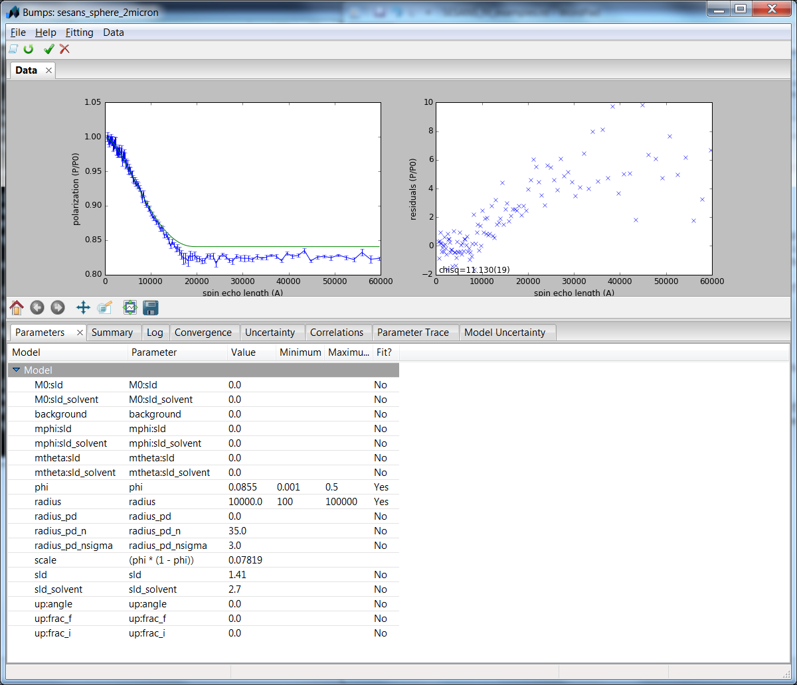
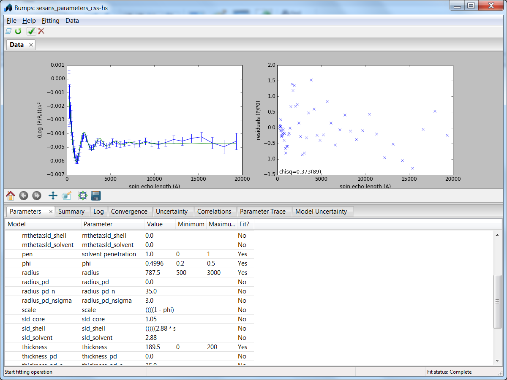

Fitting SESANS Data
Note
A proper installation of the developers setup of SasView (http://trac.sasview.org/wiki/AnacondaSetup) is a prerequisite for using these instructions.
It is possible to fit SESANS measurements from the command line in Python.
Simple Fits
In the folder sasmodels/example the file sesans_sphere_2micron.py gives an example of how to fit a shape to a measurement.
The command:
>python fit_sesans.py sesans_sphere_2micron.py
then results in a GUI from which you can control the fit.
All the parameters and names in sesans_sphere_2micron.py (shown below) can be adjusted to fit your own problem:
"""
This is a data file used to load in sesans data and fit it using the bumps engine
"""
from bumps.names import *
import sesansfit
# Enter the model name to use
model_name = "sphere"
# DO NOT MODIFY THIS LINE
model = sesansfit.get_bumps_model(model_name)
# Enter any custom parameters
# name = Parameter(initial_value, name='name')
phi = Parameter(0.0855, name='phi')
# Add the parameters to this list that should be displayed in the fitting window
custom_params = {"phi" : phi}
# SESANS data file name
sesans_file = "spheres2micron.ses"
# Initial parameter values (if other than defaults)
# "model_parameter_name" : value
initial_vals = {
"sld" : 1.41,
"radius" : 10000,
"sld_solvent" : 2.70,
}
# Ranges for parameters if other than default
# "model_parameter_name" : [min, max]
param_range = {
"phi" : [0.001, 0.5],
"radius" : [100, 100000]
}
# Constraints
# model.param_name = f(other params)
# EXAMPLE: model.scale = model.radius*model.radius*(1 - phi) - where radius and scale are model functions and phi is
# a custom parameter
model.scale = phi*(1-phi)
# Send to the fitting engine
# DO NOT MODIFY THIS LINE
problem = sesansfit.sesans_fit(sesans_file, model, initial_vals, custom_params, param_range)
Incorporating a Structure Factor
An example of how to also include a structure factor can be seen in the following example taken from Washington et al., Soft Matter, (2014), 10, 3016 (dx.doi.org/10.1039/C3SM53027B). These are time-of-flight measurements, which is the reason that not the polarisation is plotted, but the \(\frac{log(P/P_0)}{\lambda^2}\) . The sample is a dispersion of core-shell colloids at a high volume fraction with hard sphere interactions.
The fit can be started by:
>python fit_sesans.py sesans_parameters_css-hs.py
This yields after the fitting:
The code sesans_parameters_css-hs.py can then be used as a template for a fitting problem with a structure factor:
"""
This is a data file used to load in sesans data and fit it using the bumps engine
"""
from bumps.names import *
import sesansfit
# Enter the model name to use
model_name = "core_shell_sphere*hardsphere"
# DO NOT MODIFY THIS LINE
model = sesansfit.get_bumps_model(model_name)
# Enter any custom parameters
phi = Parameter(0.45, name='phi')
pen = Parameter(0.95, name='solvent penetration')
custom_params = {"phi" : phi, "pen" : pen}
# SESANS data file
sesans_file = "core_shell.ses"
# Initial parameter values (if other than defaults)
initial_vals = {
"sld_core" : 1.05,
"sld_shell" : 2.88*pen-0.05*(1-pen),
"sld_solvent" : 2.88,
"radius" : 730,
"thickness" : 20,
"volfraction" : phi,
"scale" : (1-phi)
}
# Ranges for parameters if other than default
param_range = {
"phi" : [0.2, 0.5],
"pen" : [0,1],
"radius" : [500, 3000],
"thickness" : [0,200]
}
# Constraints
# model.param_name = f(other params)
# EXAMPLE: model.scale = model.radius*model.radius*(1 - phi) - where radius and scale are model functions and phi is
# a custom parameter
model.scale = phi*(1-phi)
model.volfraction = phi
model.shell_sld = pen*2.88
# Send to the fitting engine
problem = sesansfit.sesans_fit(sesans_file, model_name, initial_vals, custom_params, param_range)